Overview
This webpage provides a "one stop shop" for over 25,000 (and more to come) data rich, geospatial, radar reflectivity images centered on high-impact weather events. These images have consistent dimensions and intensity values on a grid with relatively low spatial distortion over the Conterminous United States. So, they are perfect for training and validating machine learning models. Crowd-sourced labels will provide a consistent dataset on which to test model performance. We also plan to provide pre-trained models, either generated from unlabeled (GAN) or labeled images. The goal is to create a "model zoo" for a variety of applications and to promote competition to create the best model.
SVRIMG Python Interface
We are constantly adding functionality to the SVRIMG "API" at the SVRIMG Github Page. The Python code and examples provided there allow users to download subsets of the data and perform their own analyses. As of Summer 2020, the interface should not be considered "stable", as future changes to the interface are likely and may break your code. Please report bugs or issues on that github page, or send an email to svr.image@gmail.com. Here are some examples of how to access the data and what kinds of analyses you can perform with these data:
Generate Means of SVRIMG subsets
Download and Organize Classifications
Train a ConvNet Using Sample Labels
To run the code demonstrated at these links, just download and install SVRIMG from the github link.
Crowd-Sourced Classification
There is a phrase: "many hands make light work". This also applies to generating machine learning datasets. If hundreds of people classify hundreds of images, we can easily create a dataset of 10s of thousands of images. The process is similar to playing a video game on your phone. After accessing the map on the website, you can explore different tornado report locations and see what the radar image looked like at the time the tornado touched down. You will see various images when you interact with the website. For more information, please view the background information or click on one of the years below to start exploring.
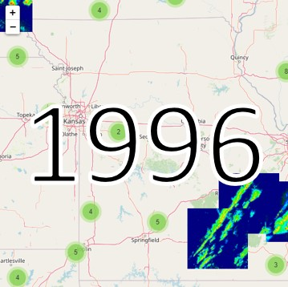 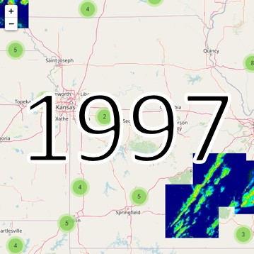 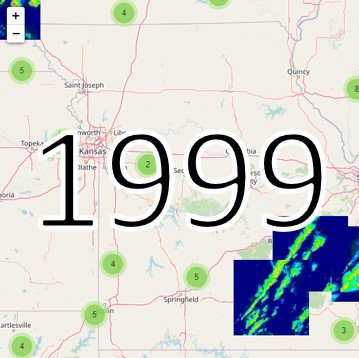
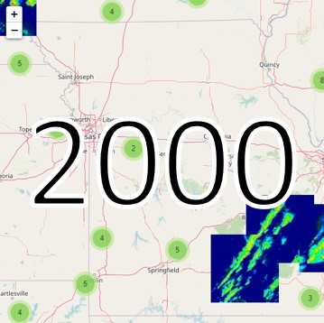
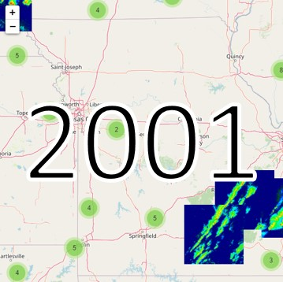
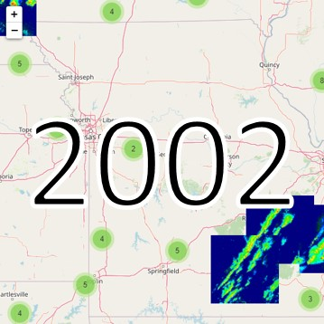
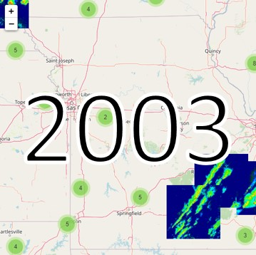
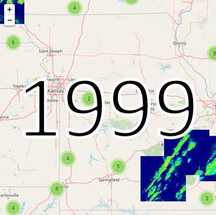
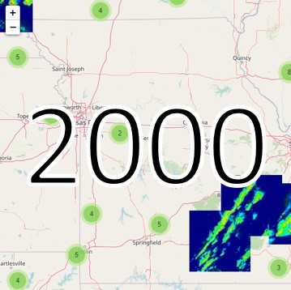
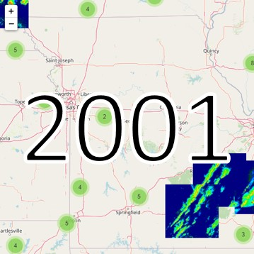
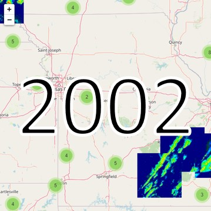
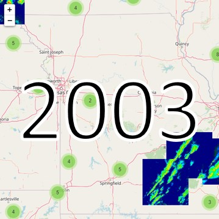
 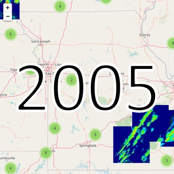
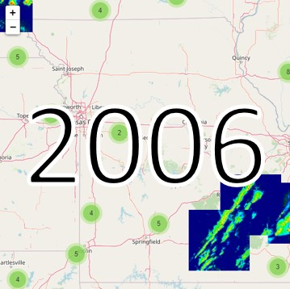
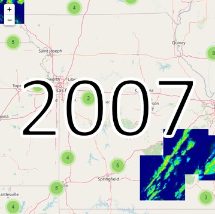
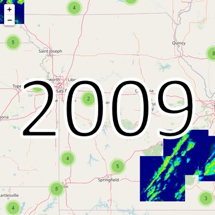
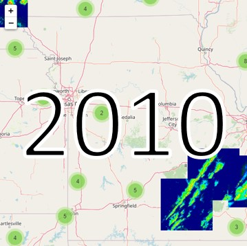
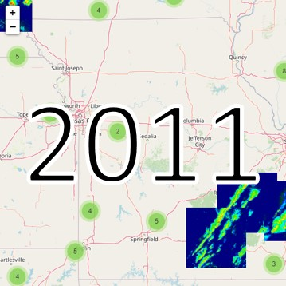
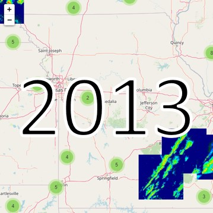
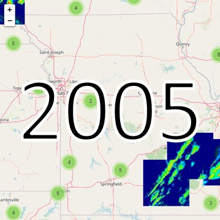
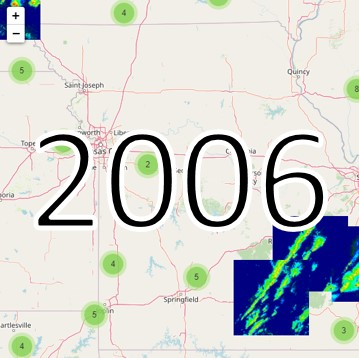
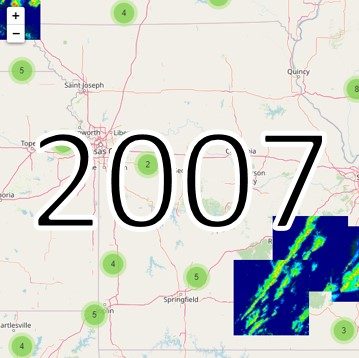
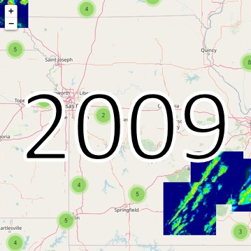
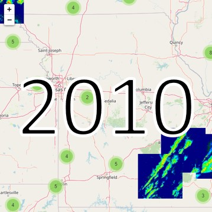
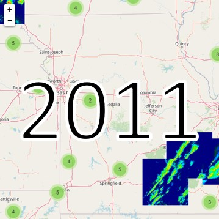
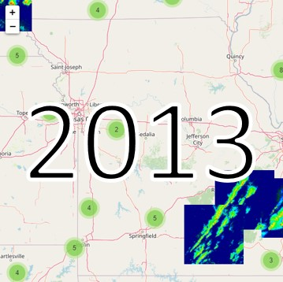

 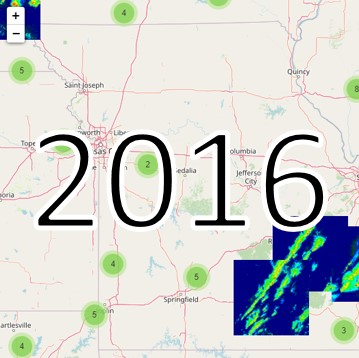
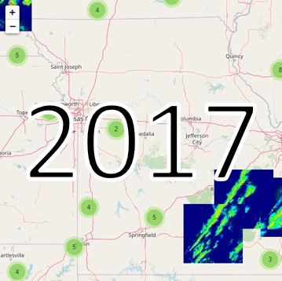
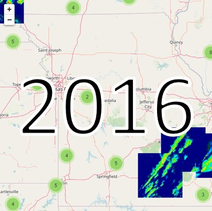
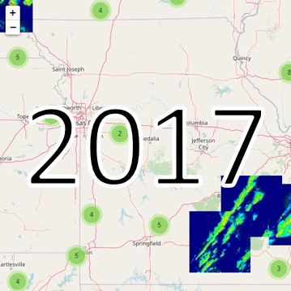
Contact Information
Please let us know how you are using the data. Any questions or bug reports should be addressed to svr.image@gmail.com .
People and institutions involved in this project:
- Alex Haberlie (Louisiana State Univeristy)
- Walker Ashley (Northern Illinois University)
- Stephen Strader (Villanova University)
- Victor Gensini (Northern Illinois University)
- Marisa Karpinski (Louisiana State Univeristy)
Data Methodology
Radar images are centered on SPC severe weather reports and extracted from the closest hourly data in GridRad which can be downloaded from the Research Data Archive. The original ~2x2km 3D data are converted to 2D by calculating the column maximum reflectivity. These values are then converted to 8-bit integers and interpolated to a 3.75 km Lambert conformal conic grid using nearest neighbor. The 136 x 136 dimensions result in a region approximately 512 x 512 km. Please view the data information page for more information and to download the raw data.
Data Citations
We are generating these data solely because we think they would be of interest to the meteorology and climatology community. That being said, we would like to get some credit if you find them useful!
If using these data in a paper or project, please cite the methods paper:
Haberlie, A. M., W. S. Ashley, and M. Karpinski, 2020: Mean storms: Composites of radar reflectivity images during two decades of severe thunderstorm events. International Journal of Climatology, In Press.
Please cite the GridRad dataset as well:
Bowman, K. P., and C. R. Homeyer. 2017. GridRad - Three-Dimensional Gridded NEXRAD WSR-88D Radar Data. Research Data Archive at the National Center for Atmospheric Research, Computational and Information Systems Laboratory. Accessed dd mmm yyyy.
Funding Sources:
Louisiana Board of Regents RCS Grant LEQSF(2019-22)-RD-A-07
National Science Foundation Grant ATM-1637225
NOAA Grant NA13OAR4310183.